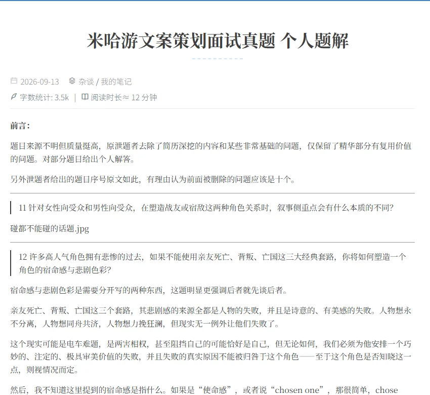
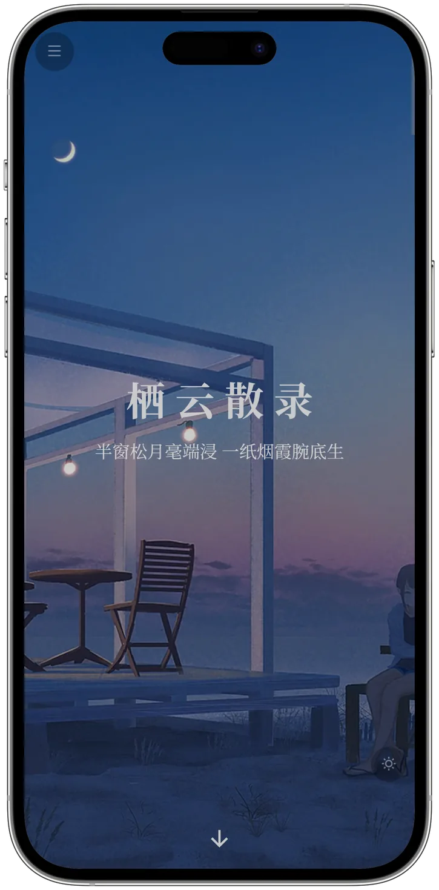

干净纯粹的阅读体验
除了链接与行内代码，不依赖语义化颜色，力求接近纸媒的体验

为易用而生的功能设计
快速检索、易读易用
低分辨率下仍然优秀
自带移动端适配，随时随地享受同一种阅读体验

三步，装完就能写
不需要改主题目录里的任何文件。站点根目录的 _config.ayeria.yml 只写要覆盖的几项。
01
安装
在站点根目录执行，Hexo 5 及以上版本均可。
npm i hexo-theme-ayeria -S
02
写配置
新建 _config.ayeria.yml，只填想改的项，不会被主题升级覆盖。
# _config.ayeria.yml
menu:
首页: /
归档: /archives
search: true
darkmode: true
03
构建
马上就可以在任何你想用的平台上享受主题了！
hexo clean && hexo generateQuestions
FAQs
需要修改主题文件吗？
除非你要改样式，否则不需要~ 站点根目录的 _config.ayeria.yml 只写要覆盖的项，不受主题升级影响。加样式可以放在站点里的 source/css/custom.styl，它会在主题样式之后加载，也可以直接改主题来维护属于你的 Ayer 分支！
和原来的 Ayer 主题是什么关系？
Ayeria 是已停止更新的 Ayer 主题的活跃维护分支（之一），沿用原作者 Eric-Shen 的 SATA 许可。
还要装哪些插件？
搜索使用 hexo-generator-searchdb，字数统计使用 hexo-wordcount，其余按需开启。
深色模式会记住吗？
会！切换时写入 sessionStorage，同一标签页内刷新与跳转都保持；关闭标签页后回到系统偏好。